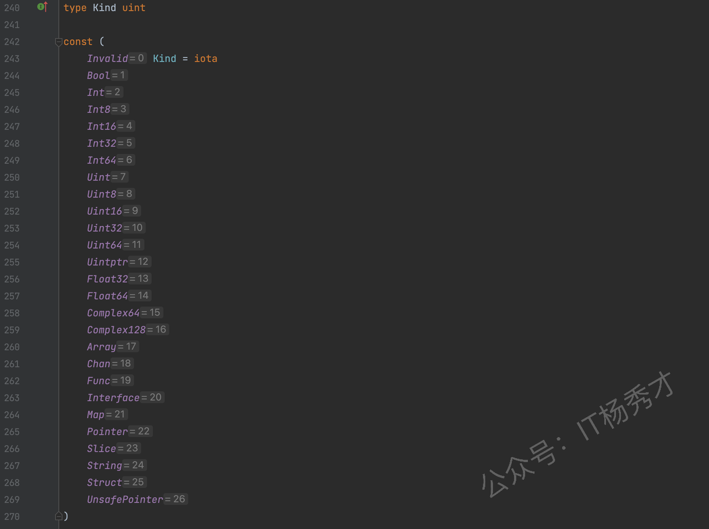

🎯 什么是反射
反射可以认为是程序在运行时的一种能力，反射可以在程序运行时访问、检测和修改它本身状态，比如在程序运行时可以检查变量的类型和值，调用它们的方法，甚至修改它们的值。使用反射可以增加程序的灵活性，简单来说，反射就是程序在运行时能够检测自身和修改自身的一种能力。
对于很多的高级语言都实现了反射，像 Java、Python。在 Go 语言中，反射在 Go 语言内置的 reflect 包下实现。Go 语言中的反射建立在 Go 的类型系统之上，并且与接口密切相关。通过前面的学习我们知道 Go 语言的空接口包含类型（Type）和值（Value）两个部分，在反射里，也要用到类型（Type）和值（Value）。
🧠 Go 语言反射基础
reflect 包中定义了 reflect.Type 和 reflect.Value，正好对应我们前面所说的 Type 和 Value。要注意的是 reflect.Type 是一个接口而 reflect.Value 是一个具体的结构体。在 reflect.Type 接口中定义了很多跟类型相关的方法，而 reflect.Value 则是绑定了很多跟值相关的方法。
📌 reflect.TypeOf()
由于 reflect.Type 是一个接口，所以只有当某个类型实现了这个接口，我们才能获取到它的类型，同时，在 reflect 包内，类型描述符是未导出类型，所以我们只能通过 reflect.TypeOf() 方法获取 reflect.Type 类型的值。
我们首先看一个例子，看下 reflect.TypeOf() 的常用用法：
|
|
运行结果：
|
|
可以看到对于基础类型和 struct 类型通过调用 reflect.TypeOf() 都打印出了对应的类型信息。注意 reflect.TypeOf 返回的是一个 reflect.Type 接口类型，我们通过调用这个接口的 String() 方法，得到最终的字符串信息。
在前面学习 interface 的章节中，我们知道一个具体的数据类型是可以赋值给一个 interface 类型的，反过来则不行，要用到 interface 的断言。在一个 interface 赋值之后，其实是对应了两个类型：
- 静态类型：在程序编译期就确定的类型，
interface的静态类型就是接口interface - 动态类型：被赋值的那个数据的具体类型
对一个数据对象进行反射操作，其实是首先将具体对象类型转化为一个 interface 类型，然后再将 interface 类型转化为 reflect 包下的反射类型，反射类型里的类型信息和值信息其实就是对应着这个中间类型 interface 的类型和值。
reflect.TypeOf() 方法获取的就是这个 interface{} 中的类型部分。
📌 reflect.ValueOf()
同理，reflect.ValueOf() 方法自然就是获取接口中的值部分，reflect.ValueOf() 的返回值其实就是一个 reflect.Value 结构。
|
|
运行结果：
|
|
注意到这里 fmt.Println(v1) 和 fmt.Println(v1.String()) 打印的不一样，上面说了 reflect.ValueOf() 的返回值就是一个 reflect.Value 结构，但是 fmt.Println(v1) 却打印出了具体的值，这是因为 fmt.Println 的参数是一个接口类型，在执行过程中有一些类型转换，对 reflect.Value 结构做了特殊处理。
📊 Go 语言数据种类
在 Go 语言中常用的数据类型有 26 种，以枚举的方式定义在 src/reflect/type.go 文件中：

这些类型中包含 int、bool 之类的基础数据类型，也包含 Struct、Array、Map 等复合类型，有了这些类型，我们用 type struct 自定义的任何类型都可以由他们组合完成。
看个 type struct 定义的数据类型使用反射的例子：
|
|
运行结果：
|
|
通过 WrapInt 的定义可以看到，WrapInt 其实就是用 type 给 int 取了个别名，二者底层其实都是 int 类型，但是通过 reflect.TypeOf 获取到各自的 type 其实是不一样的，不同 type 之间的变量赋值是需要类型强制转换的，但是深层次的去分析 type 的种类，即 Kind 确是一样的。
💻 反射使用
🔢 值对象
reflect 包下跟值对象相关的常用函数或方法：
| 函数/方法 | 说明 |
|---|---|
reflect.TypeOf() |
获取某个对象的反射类型实现（reflect.Type） |
reflect.ValueOf() |
获取某个对象的反射值对象（reflect.Value） |
reflect.Value.NumField() |
获取结构体的反射值对象中的字段个数，只对结构体类型有效 |
reflect.Value.Field(i) |
获取结构体的反射值对象中的第 i 个字段，只对结构体类型有效 |
reflect.Kind() |
从反射值对象中获取该值的种类 |
reflect.Value.MapKeys() |
对 map 的每个键的 reflect.Value 对象组成的一个切片 |
reflect.Value.MapIndex(i) |
根据 map 的某个键的 reflect.Value 对象，返回值的 reflect.Value 对象 |
reflect.Value.Len() |
对切片或数组的反射对象求切片或数组的长度 |
reflect.Value.Index(i) |
返回切片或数组第 i 个元素的 reflect.Value 值 |
reflect.Int()/reflect.Uint()/reflect.String()/reflect.Bool() |
从反射的值对象中取出对应值，注意 reflect.Int()/reflect.Uint() 方法对种类做了合并处理，它们只返回相应的最大范围的类型，Int() 返回 Int64 类型，Uint() 返回 Uint64 类型 |
📖 获取 struct 反射值
|
|
运行结果：
|
|
v := reflect.ValueOf(st)，v 是一个 Student 类型的反射值对象，通过 v.NumField() 可以得出 Student 类型的字段个数，然后 v.Field(i).Type().Name() 打印出各个字段值的类型，v.Field(i) 打印出各个字段值。
注意：
NumField()和Field()方法只有原对象是结构体时才能调用，否则会 panic
📖 获取 map 反射值
|
|
运行结果：
|
|
v := reflect.ValueOf(m) 对 map 类型的对象 m 进行反射，通过 v.MapKeys() 得到 m 中所有 key 的 reflect.Value 对象 k，然后通过 v.MapIndex(k) 得到对应 key 反射值对象的 value 反射值对象，然后通过 reflect.Value 的 Type().Name() 方法获取 map 中 key、value 的类型，然后打印出对应值。
📖 获取 slice 反射值
|
|
运行结果：
|
|
v1、v2 分别是切片和数组的反射值对象，通过 Len() 获取到数组或切片中的元素个数，然后通过 v.Index(i) 获取对应元素的 reflect.value 对象，打印出其值。
注意：
Len()和Index(i)方法只能在原对象是切片、数组或字符串时才能调用，其他类型会 panic
🔢 类型对象
reflect 包下跟类型相关的常用函数或方法：
| 函数/方法 | 说明 |
|---|---|
reflect.Value.NumField() |
获取结构体的反射值对象中的字段个数，只对结构体类型有效 |
reflect.Value.Field(i) |
获取结构体的反射值对象中的第 i 个字段，只对结构体类型有效 |
reflect.Value.Elem() |
根据指针获取对应的具体类型 |
reflect.Value.NumIn() |
获取函数反射类型的参数个数 |
reflect.Value.In(i) |
获取函数反射类型的第 i 个参数 |
reflect.Value.NumOut() |
获取函数反射类型的返回值个数 |
reflect.Value.Out(i) |
获取函数反射类型的第 i 个返回值 |
reflect.Value.NumMethod() |
获取 struct 上绑定的方法个数 |
reflect.Value.Method(i) |
获取 struct 上绑定的第 i 个方法 |
📖 struct 反射类型
|
|
运行结果：
|
|
通过 reflect.Type 的 Name() 方法可以获取对应的 Type 类型，Kind() 方法获取底层的数据种类，即 kind，跟 reflect.Value 一样，reflect.Type 也提供了 NumField() 方法用于获取结构体对象中的字段个数，通过 t.Field(i).Name 可以获取对应字段的名字。同样，Field(i) 和 NumField() 也只能对结构体反射使用。
📖 指针反射类型
|
|
运行结果：
|
|
可以看到，跟上面直接获取 struct 有一点点小小的区别，那就是 fmt.Println(t.Kind()) 打印出的是一个 ptr 指针类型，而不再是 struct 类型，正是因为这里是一个 ptr，所以我们不能直接在这个 ptr 上调用 .Name() 以及其他的 .NumField() 之类的方法，要根据 ptr 的 .Elem() 获取到具体类型之后，才能用这些方法，否则程序就回报 panic，这点一定要注意。
📖 函数反射类型
|
|
运行结果：
|
|
t := reflect.TypeOf(Add) 获取到 Add 函数的 type 类型，然后通过 NumIn() 方法获得 Add 函数的参数个数，依次打印出参数的类型。通过 NumOut() 方法获得 Add 函数的返回值个数，依次打印出返回值的类型。
📖 反射获取 struct 方法
|
|
运行结果：
|
|
reflect.Type.NumMethod()：返回 struct 所绑定的的方法个数reflect.Type.Method(i)：返回第 i 个方法的reflect.Method对象
reflect.Method 定义在 src/reflect/type.go 文件：
|
|
所以，通过 reflect.Method 对象，我们可以获取到 struct 所绑定的对应方法的方法名、方法类型等信息。
⚙️ 通过反射调用方法
在上一小节我们知道了 reflect.Type.Method(i) 可以获取到 struct 所绑定的具体的方法对象 reflect.Method，通过这个对象，我们不仅可以获取方法的详细信息，还可以动态的调用方法。
其实在 reflect.Value 里我们也可以使用 NumMethod()/Method(i) 方法获取到对应的方法信息，不同的是 reflect.Value.Method(i) 返回的是一个 reflect.Value 对象，但是同样可以根据这个对象来动态调用方法，只是两者调用方法的方式有所区别。
请看具体例子：
|
|
运行结果：
|
|
可以看到通过 reflect.Type.MethodByName() 方法获取到的 reflect.Method 对象和 reflect.Value.MethodByName() 方法获取到的 reflect.Method 获取到的 reflect.Value 对象都可以在程序运行时动态的调用方法修改结构本身，student 的 name 由 zhangsan → lisi → wangwu。
但是二者的调用存在一个区别：
- 通过
reflect.Method调用方法，必须使用Func字段，而且要传入接收器的reflect.Value作为第一个参数：
|
|
reflect.Value.MethodByName()返回一个reflect.Value对象，它不需要接收器的reflect.Value作为第一个参数，而且直接使用Call()发起方法调用：
|
|
🔧 通过反射设置值
在介绍通过反射设置或者说是修改值的方法之前，首先介绍一个概念：反射寻址。简单的说，可寻址就是可以根据地址找到值，在反射里面，reflect.Value 由 reflect.ValueOf() 方法得到，根据命名就可以知道 reflect.ValueOf() 是得到一个值对象，显然他不能得到这个值的地址。所以通过 reflect.ValueOf() 方法得到的 reflect.Value 都是不可寻址的。在 reflect 包下有一个 CanAddr() 方法可以用于验证一个对象是否可寻址。
|
|
运行结果：
|
|
尽管这里 st 是一个 Student 类型的指针，但是经过 reflect.ValueOf() 之后得到的对象 v，仍然是不能寻址的，他只能反映出当前指针指向的具体元素的地址，而当前指针自身所在的内存地址是无从得知的。
经过前面学习指针反射类型的学习，我们知道了假设 reflect.ValueOf() 返回的是一个指针的 reflect.Value 对象，那么我们可以调用 reflect.Value.Elem() 方法得到具体的类型，而此时得到的这个反射具体类型就是可寻址的，我们可以知道他的地址，道理很简单，因为 reflect.Value.Elem() 获取到的值，记录了根据指针获取到值这个获取路径，显然我们可以根据值追溯到地址。
📌 reflect.Value.Elem() 方法得到具体的类型可寻址
|
|
运行结果：
|
|
可以看到，通过 reflect.Value.Elem() 方法得到具体的类型之后，这个具体的类型就是可寻址的，所以 CanAddr() 方法返回 true。
🔍 类型断言
在 Go 语言中，类型断言提供了两种方式来检查接口变量的具体类型：
📖 直接断言
失败会 panic：
|
|
📖 comma-ok 断言
失败不 panic：
|
|
这种模式更加安全，推荐在实际开发中使用。
🏷️ 结构体标签（Tag）
**Go 语言的标签（tag）**是结构体字段的元数据，通过反射机制在运行时提供字段的额外信息。标签支持多种格式，包括 JSON 序列化、数据库映射、表单验证等，使结构体能够适应不同的使用场景，是 Go 语言灵活性的重要体现。
📖 JSON 标签使用
在使用 json 包时，结构体里的变量不加 tag 能不能正常转成 json 里的字段？
- 如果变量首字母小写，则为
private。无论如何不能转，因为取不到反射信息 - 如果变量首字母大写，则为
public- 不加
tag，可以正常转为json里的字段，json内字段名跟结构体内字段原名一致 - 加了
tag，从struct转json的时候，json的字段名就是tag里的字段名，原字段名已经没用
- 不加
📖 解析 JSON 数据时的默认类型
使用 encoding/json 包解析到 interface{} 时：
| JSON 类型 | Go 默认类型 |
|---|---|
| 数字（整数或浮点） | float64 |
| 字符串 | string |
| 布尔值 | bool |
| null | nil |
| 对象 | map[string]interface{} |
| 数组 | []interface{} |
如果你事先定义了结构体并且指定了字段类型，json.Unmarshal 会按你定义的类型解析。
⚠️ 反射的注意事项
虽然反射提供了强大的灵活性，但在使用时需要注意以下几点：
🚨 性能影响
反射过程中会有大量的内存开辟和 GC 过程，导致程序的性能降低。在性能敏感的场景下，应谨慎使用反射。
🚨 类型安全
反射绕过了编译时的类型检查，可能导致运行时错误。使用反射时需要格外小心，确保类型转换的正确性。
🚨 代码可读性
大量使用反射会降低代码的可读性和可维护性。应该在确实需要动态性的场景下使用反射，而不是滥用。
💡 最佳实践
- 优先使用接口：如果可以通过接口解决问题，优先使用接口而不是反射
- 缓存反射结果：对于重复的反射操作，可以缓存结果以提高性能
- 错误处理：使用反射时要做好错误处理，避免 panic
- 文档说明：使用反射的代码应该有清晰的文档说明其用途和行为
📚 总结
Go 语言的反射机制是一个强大的工具，它允许程序在运行时检查和修改自身的结构和行为。通过 reflect 包，我们可以：
- 获取变量的类型信息（
reflect.TypeOf） - 获取变量的值信息（
reflect.ValueOf） - 动态调用方法
- 动态修改值
- 处理未知类型的数据
反射在许多场景下都非常有用，比如：
- 序列化和反序列化：JSON、XML 等格式的处理
- ORM 框架：数据库映射
- 依赖注入：框架自动装配依赖
- 测试框架：自动生成测试代码
但是，反射也是一把双刃剑，它牺牲了类型安全和性能来换取灵活性。在实际开发中，我们应该根据具体场景权衡是否使用反射，遵循"能用接口就不用反射"的原则，在确实需要动态性的场景下才使用反射。